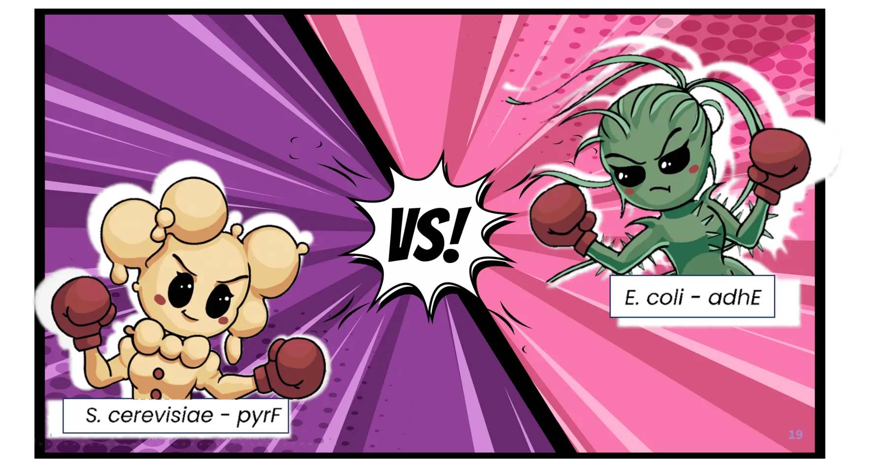

Experimental literature, made explorable
Find the engineering moves behind microbial production.
Search 25 years of experimentally reported strain designs by organism, product, gene, and modification direction.
Explore the database
Database explorer
Start with a question.
Combine free-text search with biological filters. Every result links back to its PubMed record.
Loading the searchable dataset into your browser…
Serve this folder through GitHub Pages or a local web server and try again.
About ELISER
A literature-scale starting point for strain engineering.
ELISER compiles experimentally reported microbial strain-design strategies, connecting host organisms and target products to the genes researchers increased, decreased, or otherwise modified.
“A stepping stone for starting new strain-design projects without reinventing the wheel.”
Márquez-Zavala, Di Bartolomeo & Machado